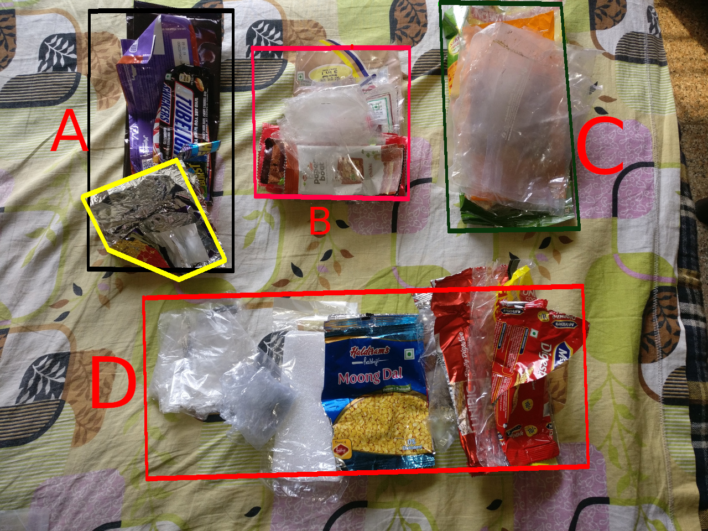

Motivation¶
I've been an arm-chair environmentalist for far too long.
Starting 2019 I decided to do something real for a change. I am
starting small and trying to optimize my consumption habits to have
the least possible Carbon Footprint, as well as un-needed waste.
Plan of Action¶
"Optimize" often boils down to reduction in (unnecessary) consumption
pattern for the most part.
Now all I had to do was to reduce what I buy. Easier said than
done. The lack of observability in the whole "reduce waste" process
complicates things.
Someone said
You can not fix what you can not see!
With that in mind I know what I had to do. I had to collect every
single-use plastic that I used in the month of January.
The plan was simple:
- If you buy something that it has a plastic wrapper. Put it in the
bag (I had a dedicated pocket for this) - Be liberal with what you buy. Don't get into the "buy less" thingy
now. (this is because i want to get a picture of what the "worst
case scenario" looks like for me) - Refuse plastic carry bags for the normal scenarios where you refuse
plastic carry bags. - Plastic waste includes anything that you paid for and/or consumed.
Complications¶
While collecting waste was easy, the complicated part was the
traveling.
- I had to travel to Kolkata for 8 days due to some family emergency
which was unplanned. - I had to travel to Bangalore for some work for a week.
The weird part was collecting all the plastic during these travels.
I do think that these travels increased my consumption by some margin.
I also went trekking in Bangalore so there is some extra waste associated with that as well.
So, what do we have here!¶
This is a photo of all the stuff I collected. It's grouped into 4 sections

I apologize for the atrocious photo editing skills
Anyway, the stuff is divided into 4 groups.
A. Chocolate Wrappers¶
These are all chocolate wrappers. I don't always buy chocolates except
some candies from the office canteen. The stuff in the yellow box are
those.
Other than those I have 2 Amul Bitter chocolates (gifts) and 2 some
weird chocolate i bought in Bangalore and one snicker for the trek.
I can get rid of this entire section by not eating chocolates at all
or by buying proper chocolates.
B. Peanut Brittle Wrappers¶
This section is entirely made up of peanut-brittle wrappers of all
shapes and sizes.
I am a sucker for peanuts. I use peanut brittle specifically whenever
I need to grab something quick to eat or snack on. This doesn't happen
as often.
I also use peanut brittle as the primary food source during my
treks. These wrappers are from the treks.
I project that I can reduce the size of this section significantly by
either buying peanut brittle in large quantities locally or making
them myself.
C. Monthly rations¶
This is the part that I require on a monthly basis.
This includes the wrappers of:
- Oats (500gm packet per month)
- Raw peanuts (either this or peanut butter)
- Dates (about 250 gms a month)
- Flax seeds (about 60 gms a month)
- Bread (about 4 packets a month)
This part is a bit tricky. I'll have to do some further research to
optimize this part (suggestions are welcome).
D. Miscellaneous¶
This is the stuff that I do not buy regularly at all. All of these
are from one-time purchases for this month.
This includes some biscuit wrappers, a mobile phone case wrapper, some
plastic that they use to serve food with in Bangalore.
This part will be eliminated and/or changed in February.
E. Long term purchases¶
p.s. not in the photo¶
This part will include things that are made of plastic but that also
last a long time or those that are repurposed into something else.
These include things like the cup noodles I buy just because I like
the boxes and can re-purpose them into something else.
My peanut butter container, detergent packet, shampoo container etc
come in this category.
This part can also be optimized heavily by being very very intelligent
about what I buy.
What now ?¶
I will continue to collect my personal generated waste for the month of
February and March as well since I want to establish a pattern here.
My next goal would be to optimize my Long Term purchases and
transition from using some unsustainable materials to sustainable
ones. This is an expensive goal. Baby steps. We will get there.
Another goal would be to optimize my nutrition. I will actively
monitor my food intake during the month of Feb. More on this later.
Another goal is to optimize my buying habits. More on this later as
well.
Is all of this an Exercise in Futility ?¶
Well, in 2019 considering the current status of Climate Change no
single human can make a difference now. Thus, you switching off the
light when not in use isn't that significant. The situation is so bad
that things will not get better unless governments, organizations,
companies etc start doing something. Its a MASSIVE issue.
That being said, does this mean that we should all stop doing our
small parts ? I think NO. (you can have your own opinion)
We as consumers have more power in controlling the actions of a
company, organization or a nation. We just need to acknowledge that
and act accordingly.
Alright, That's it for now. :-)